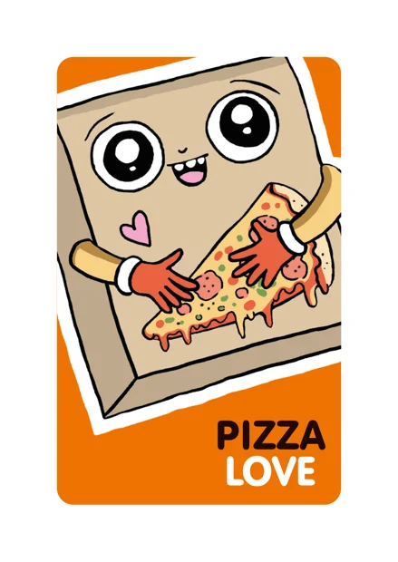
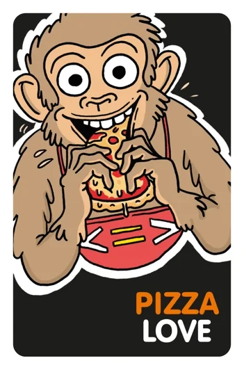
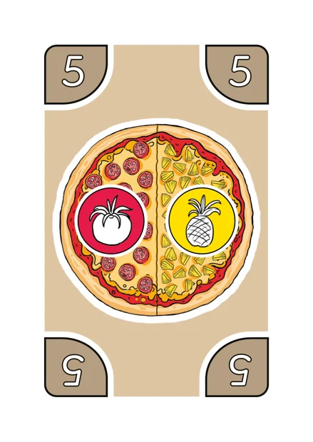
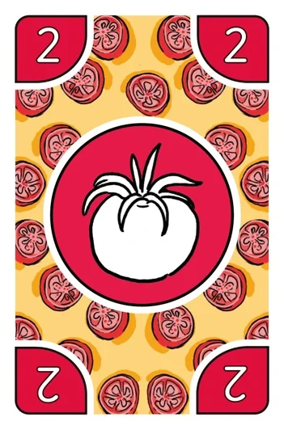
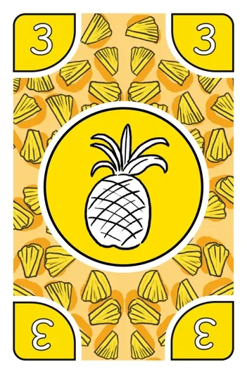

Pizza Love® -korttipeli
Kolme peliä samalla pakalla. Aloita Pizza Partystä: se on nopein oppia.
- 2–5 pelaajaa
- 6+
- 42 pizzakorttia
- 58 täytekorttia
Näin pizza tehdään
Kaikki kolme peliä perustuvat samaan sääntöön. Opettele tämä ensin.

Pizzakortit
Pizzakortissa on pizza, jossa on yhdestä neljään eri täytettä. Kortin kulmissa on pizzan arvo (1–10). Pelissä on 10 sydänpizzaa, joiden arvo on 10.

Täytekortit
Täytekortissa on yksi täyte. Kortin kulmissa on täytteen arvo (1–10). Kolme fantasiatäytettä (X) voivat olla mikä tahansa täyte.
Perussääntö
Pizzakortit ovat aina pöydällä. Ne valmistetaan kädessä olevilla täytekorteilla.
Pizzan arvo
Valmista pizza omilla täytekorteillasi ja sano ääneen laskutoimitus, jolla saat pizzan arvon. Kaikki laskutoimitukset ovat sallittuja ja niitä saa yhdistää, kunhan tulos on pizzan arvo. Esimerkiksi 5 = 2 + 4 – 1.
Esimerkki: tomaatti-ananaspizza

=
+
Pizzassa on kaksi täytettä ja sen arvo on 5. Tomaatti 2 + ananas 3 = 5. Muitakin tapoja on: 4 + 1, 6 – 1 tai jopa 10 : 2.
Kaksi tapaa valmistaa pizza
Helpompi tapa
Pizzan voi valmistaa millä tahansa määrällä täytekortteja, myös yhdellä. Käytä tätä, kun pelaat Pizza Partya ensimmäistä kertaa tai pienen lapsen kanssa.
Basso-apinan tapa
Käytä yhtä monta eri täytettä kuin pizzassa on täytteitä. Kortteja saa olla enemmänkin: tomaatti-ananaspizzan (arvo 5) voi tehdä vaikka kahdella tomaatilla ja yhdellä oliivilla, 2 + 2 + 1 = 5, koska täytteitä on kaksi eri lajia. Käytä tätä Pizza Bassossa tai kun haluat Pizza Partyyn lisähaastetta.
Painetuissa ohjeissa sääntö on vielä muodossa ”yhtä monta täytekorttia kuin täytteitä”. Uusi tapa antaa pelille enemmän mahdollisuuksia.
Bruno vai Basso? Pelin apina on nykyään Basso. Vanhemmissa ohjeissa ja videoissa hänen nimensä on Bruno, ja toisen pelimuodon nimi on Pizza Bruno. Säännöt ovat samat.
Kolme tapaa pelata
Avaa pelimuoto, niin näet säännöt ja videot.
#1Pizza PartyHelpoin aloitus, nopea ja vauhdikas
Videot
Tavoite
Pelaajat valmistavat kilpaa pizzoja. Voittaja on se, joka tekee eniten pizzoja ennen kuin pizzat tai täytteet loppuvat.
Valmistelut
- Sekoita pizzakortit ja aseta ne pinoksi kaikkien ulottuville.
- Sekoita täytekortit ja jaa jokaiselle pelaajalle 5 korttia. Loput täytekortit ovat nostopakka. Pelaajat saavat katsoa korttinsa.
Aloittaminen
Käännä ensimmäinen pizzakortti näkyviin pinon viereen. Kaikki yrittävät heti valmistaa sen omilla täytekorteillaan.
Pelin kulku
- Peliä pelataan ilman vuoroja: kaikki yrittävät valmistaa pizzoja yhtä aikaa.
- Nopein pelaaja, joka valmistaa pizzan, saa kortin ja kerää sen eteensä.
- Käytetyt täytekortit poistetaan pelistä. Nosta uusia, kunnes kädessä on taas 5 korttia.
- Käännä heti uusi pizzakortti näkyviin. Jatka, kunnes pizzakortit tai täytekortit loppuvat eikä kukaan pysty enää valmistamaan pizzaa.
Jos pizzaa ei voi valmistaa
Jos kukaan ei pysty tai halua valmistaa näkyvää pizzaa, käännä uusi pizzakortti sen päälle. Seuraavan pizzan valmistaja saa kaikki näkyvät pizzat.
Pisteet ja voittaminen
Tavallinen pizza = 1 piste, sydänpizza = 2 pistettä. Kierroksen voittaa eniten pisteitä saanut. Sopikaa, montako kierrosta pelataan, esimerkiksi ensimmäisenä 3 tai 5 kierrosta voittanut voittaa koko pelin.
Rauhallisempi Pizza Party
Voitte pelata myös vuoroissa, jolloin jokainen saa miettiä rauhassa omalla vuorollaan.
Valinnaiset säännöt
Voitte rajata laskutoimituksia, esimerkiksi:
- pelataan vain yhteen- ja vähennyslaskuilla
- jokaisessa pizzassa on käytettävä kerto- tai jakolaskua.
#2Pizza BassoRauhallinen ja jännittävä
Videot
Vanhemmissa ohjeissa: Pizza Bruno.
Tavoite
Pelaajat yrittävät päästä eroon kaikista täytekorteistaan. Ensimmäisenä onnistunut voittaa kierroksen.
Huom. Pizzat valmistetaan Basso-apinan tapaan: käytä yhtä monta eri täytettä kuin pizzassa on täytteitä. Kortteja saa olla enemmän, esimerkiksi kaksi oliivia.
Valmistelut
- Sekoita pizzakortit ja aseta ne pinoksi kaikkien ulottuville.
- Sekoita täytekortit ja jaa jokaiselle pelaajalle 7 korttia. Loput täytekortit ovat nostopakka. Pelaajat saavat katsoa korttinsa.
Aloittaminen
Käännä ensimmäinen pizzakortti näkyviin pinon viereen. Viimeksi pizzaa syönyt pelaaja aloittaa.
Pelin kulku
Pelaajat yrittävät vuorollaan valmistaa näkyvän pizzan omilla täytekorteillaan.
A) Jos onnistut: poista käytetyt täytekortit pelistä ja käännä pinosta uusi pizza edellisen päälle. Vuoro siirtyy seuraavalle.
B) Jos et onnistu tai halua valmistaa pizzaa: nosta yksi täytekortti. Vuoro siirtyy seuraavalle.
C) Yksi kortti kädessä: kun sinulla on enää yksi täytekortti, elehdi kuin nälkäinen Basso-apina ja huuda: ”PIZZAA!”
Jos täytekortit loppuvat
Sekoita pelistä poistetut täytekortit uudeksi nostopakaksi ja jatka.
Pisteet ja voittaminen
Kierroksen voittaa se, joka pääsee ensimmäisenä eroon kaikista täytekorteistaan. Muiden kädessä olevien korttien arvot lasketaan yhteen, ja summa on voittajan pisteet. Tavallinen täyte on arvonsa verran (1–10), fantasiatäyte 20.
Ensimmäisenä 100 pistettä kerännyt voittaa ja saa tittelin Pizza Basso – todellinen pizza-apina.
Lyhyempi peli
Voitte sopia, että peli päättyy esimerkiksi 30 tai 50 pisteeseen, tai että koko pelin voittaa ensimmäisenä 3 tai 5 kierrosta voittanut.
#3Pizza LoveTaktisin ja haastavin, 8+
Tavoite
Pelaajat yrittävät valmistaa kaikki omat pizzansa ennen muita. Ensimmäisenä onnistunut voittaa.
Huom. Nyt täytteet ratkaisevat: pizzan voi valmistaa vain oikeilla täytteillä.
Valmistelut
- Sekoita ja jaa jokaiselle 8 pizzakorttia. Pelaajat asettavat ne kuvapuoli alaspäin pinoksi eteensä ja kääntävät päällimmäisen näkyviin.
- Aseta yksi pizzakortti keskelle pöytää kuvapuoli ylöspäin. Se on vaihtopizza. Loput pizzakortit poistetaan pelistä.
- Sekoita täytekortit nostopakaksi pöydälle.
Varasto
Jokaisella on edessään 4 paikkaa varastokorteille. Varaston täytekortit ovat kuvapuoli ylöspäin. Niitä voi käyttää omiin pizzoihin kuten kädessä olevia, ja muut pelaajat voivat käyttää niitä vaihtoihin.
Aloittaminen
Viimeksi pizzaa syönyt aloittaa ja nostaa 5 täytekorttia käteensä.
Pelin kulku
- Nosta täytekortteja, kunnes sinulla on 5 korttia kädessä.
- Yritä valmistaa oman pinosi päällimmäinen pizza käden ja varaston korteilla.
- Voit vaihtaa varastosi kortteja toisen pelaajan varastokortteihin laskutoimitusten avulla.
- Kerran vuorossa voit vaihtaa oman pinosi päällimmäisen pizzan keskellä olevaan vaihtopizzaan. Sen saa valmistaa heti.
- Laita vuoron lopuksi yksi täytekortti kädestäsi kuvapuoli ylöspäin varastoosi.
Pizzan valmistaminen
Kun sinulla on pizzaan tarvittavat täytteet kädessä ja/tai varastossa, valmista pizza. Pizzakortti ja käytetyt täytekortit poistetaan pelistä. Käännä pinostasi uusi pizza näkyviin: jos sinulla on siihen täytteet, voit valmistaa senkin heti.
Sydänpizza
Kun valmistat sydänpizzan, anna seuraava pizzakorttisi katsomatta toiselle pelaajalle. Hän laittaa sen pinonsa alimmaiseksi.
Varastokorttien vaihtaminen
Hanki puuttuvia täytteitä vaihtamalla varastosi kortteja toisen pelaajan varastokortteihin. Vaihto tehdään laskutoimituksilla: kaikki käy, kunhan tulos on sama molempien pelaajien korteilla. Voit tehdä vuorossa useita vaihtoja, mutta yksi vaihto on aina kahden varaston välillä. Toisen kortin alla olevaa korttia ei voi vaihtaa. Saadut kortit laitetaan omaan varastoon haluttuun järjestykseen.
Varaston täyttäminen
Jos pelaat kätesi tyhjäksi ennen varastokortin laittamista, nosta 5 uutta korttia ja jatka vuoroa. Varastopaikat voi täyttää missä järjestyksessä tahansa, ja kortteja voi pinota päällekkäin. Päällimmäinen on käytettävä ennen alempia. Varastossa olevia kortteja ei saa siirtää.
Pelin voittaminen
Peli päättyy, kun joku on valmistanut kaikki pinonsa pizzat.

Säännöt PDF:nä
Painettu sääntöarkki suomeksi, ruotsiksi ja englanniksi.